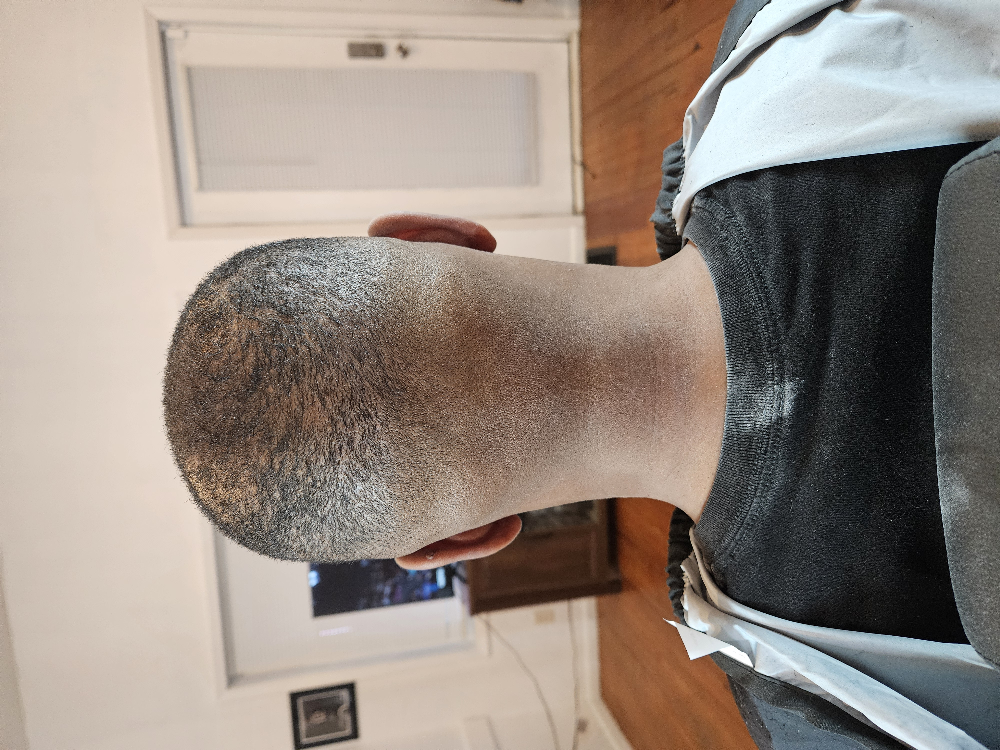
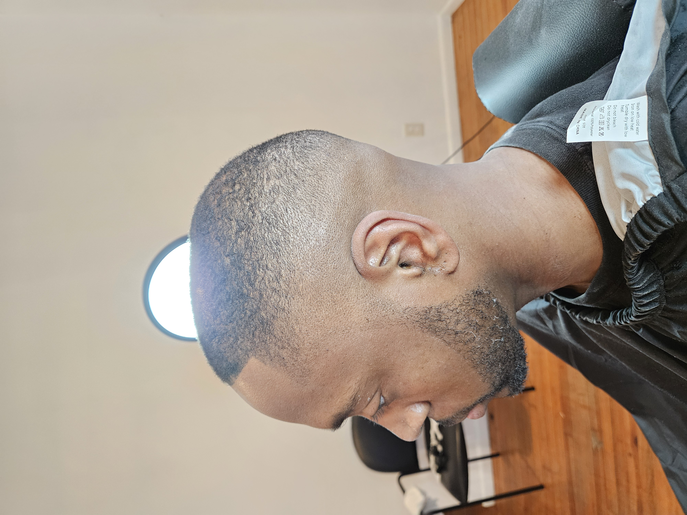
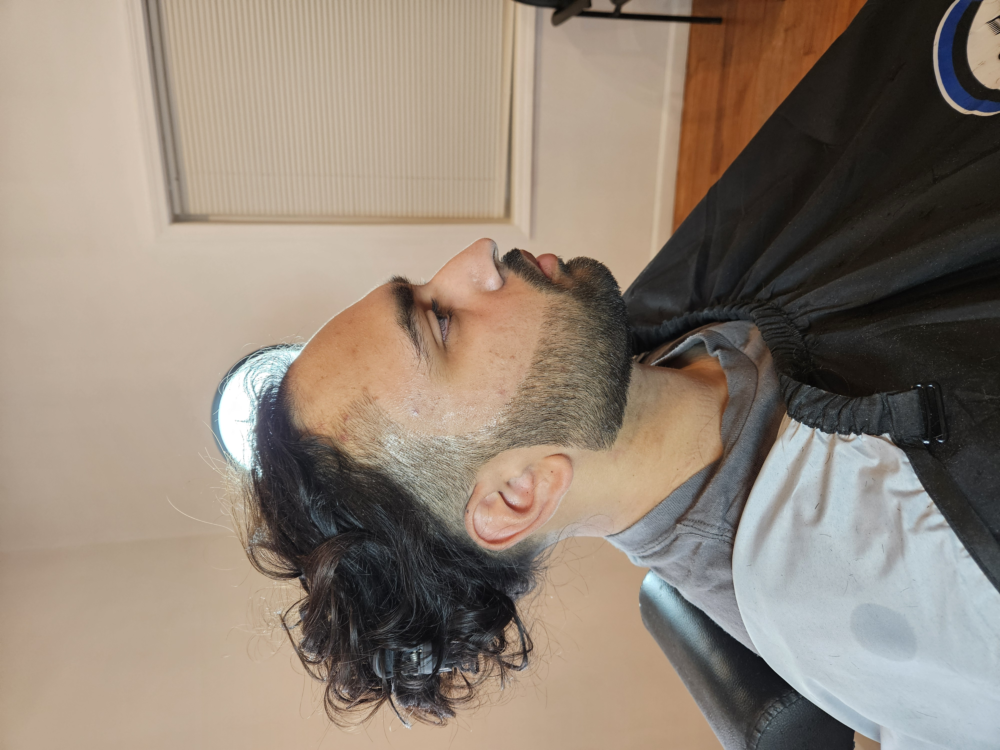

Haircut & Beard Gallery
Explore a selection of haircuts and beard work from Danny G’s Urban Cutz LLC.
Our Haircut & Beard Work






Find Your Next Look
Have questions about a haircut or beard service? Explore our prices or call the shop to discuss your style ideas.
Explore Services & Pricing